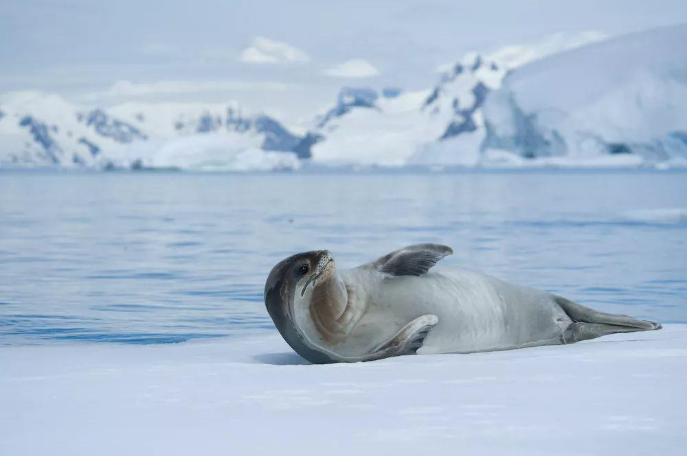
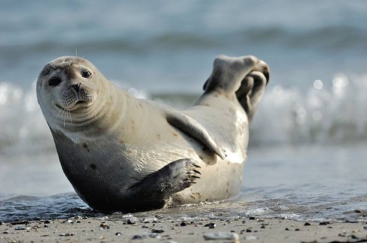
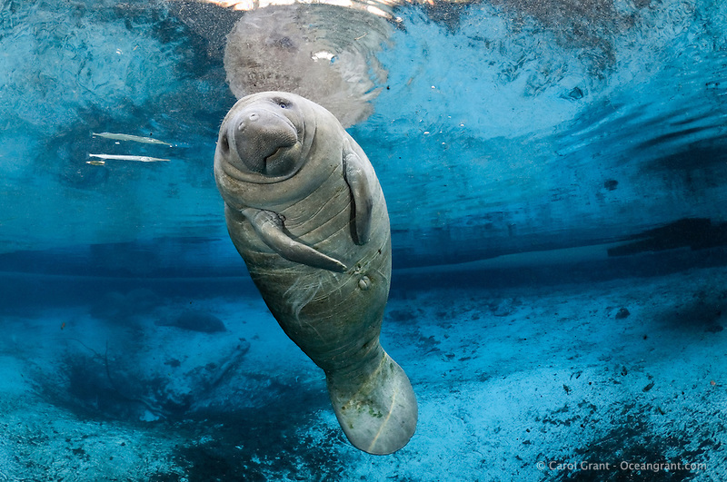
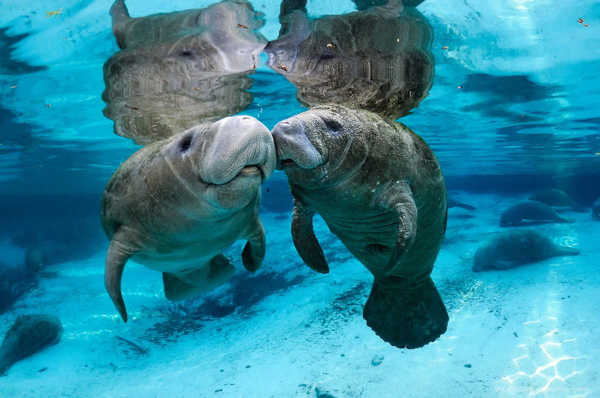
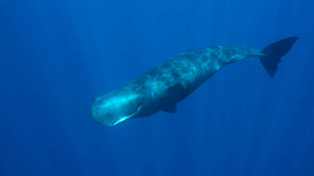
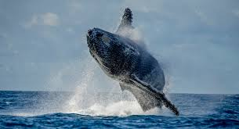

Big Fellas(mammals)
Name: sea lion(Otariinae)
Depth: between 450 and 900 feet
Appearance: Sea lions range mainly from light to dark brown, with a streamlined body. They have powerful front flippers used for swimming. The sea lion’s rear flippers can be rotated under its body to walk very efficiently on land. Sexually mature males are much larger than females, and have a sagittal crest, or large bump, on their heads. In some species, the males have longer hair on their necks, similar to a lion’s mane.
Lifestyle: Sea lions are very social, they have a variety of communication methods, usually in groups. During the day, they hunt in the sea, swim and dive mainly by their long forelimbs. Sometimes they climb to the shore to bask in the sun, and sleep on the shore at night. Sea lions are considered to be very timid and docile animals, but there have been some reports of aggression against humans. During reproduction, males were more active, especially when it came to mating rights with females. Sea lions feed on fish, squid, jellyfish and mussels. They also like krill and sometimes even penguins when they are hungry. Most of them are whole swallowing without chewing. Sea lions eat a large amount of food, so they spend most of their time in the sea to catch food and fill their big appetite to get enough energy for swimming. To help digest, swallow some small stones.


Name: walrus(Odobenus rosmarus)
Depth: 300 feet
Appearance: Walrus has a large body with sparse setae; it has small eyes and poor vision; it has two long teeth; its limbs have degenerated into fin shape because they adapt to life in the water, and they only bend forward by the hind fin feet; and the combined action of tusks penetrating into the ice can they crawl on the ice. Walrus skin is thick and wrinkled enough to withstand the Arctic cold. The naked glabrous body surface is generally grayish brown or yellowish brown, but there are often some wonderful changes. After soaking in the cold sea water for a period of time, in order to reduce the energy consumption, the arteries and blood vessels constrict, and the blood flow is limited, so the body surface becomes terrible gray white. After landing, the blood vessels expand, and the body surface appears brown red. Especially when a group of walrus lie together, it is like a huge brown carpet on the rock."
Lifestyle: Walrus is a group of animals, living an amphibious life in cold sea water and land ice, each group can be from dozens, hundreds to thousands. In order to recover the fatigue after swimming in the sea for a long time, most of the time on the land is sleeping and resting. Sometimes, the tusks and short hind legs are used to stagger, which is very clumsy and funny. But in the sea, with a streamlined body, well-developed muscles and powerful flippers, you can move freely and be very smart. The vision is poor, but the sense of smell and hearing are quite sharp. When the group is sleeping, it will always leave a sentry. When it finds that there is danger, it will immediately send out a bull like roar to wake up the companions, or use its tusks to wake up the other individuals around them, and then transmit the danger warning in turn. If the group is large, the watchmen often swim in the water, constantly sticking out their heads to monitor the situation around them. The feeding habits of walruses are complex, but they do not eat fish. They mainly feed on lamellibranchial mollusks, and also prey on squid, shrimp, crab and worms. Sometimes, they occasionally swallow a small amount of young plants in the water and organic matter sediment in the sea floor."


Name: seal(Phocidae)
Depth: -
Appearance: Seals are marine animals, mammals (viviparous). Their bodies are streamlined and their limbs turn into fins, which are suitable for swimming. Seals have a thick layer of subcutaneous fat to keep warm and provide food reserves to produce buoyancy. Seal body is spindle shaped, suitable for swimming, round head, looks like a domestic dog, the whole body is covered with hair, forelimbs shorter than hind limbs.
Lifestyle: Seals live in the cold temperate ocean. They swim, feed or play in the sea except for the calving, rest and hair changing seasons on ice, sand or rocks. There is no colony in the breeding period. After the baby is born, they form a family group. After the lactation period, the family group ends. When the ice melts, the cubs begin to live independently in the water. A small number of individuals with a delayed breeding season have to give birth on the beach along the coast. Fish as the main food, but also eat crustaceans and cephalopods.
 Name: Manatee(Trichechus)
Depth: -
Appearance: The shape of the manatee is spindle shaped, which is similar to a small whale, but has a short neck, which is different from that of the whale. The body length is 2.5-4.0 meters, and the body weight is about 360 kg. A large amount of fat is stored under the skin, which can maintain body temperature in the sea water. The forelimb is characterized by paddle like fins, without hind limbs, but it still retains a degenerate bone basin. It has a large and meaty flat caudal fin. Its trunk is basically hairless, with only whiskers around the lips and head The head is large and round with large lips and nostrils above the snout. It lives in warm waters of the Atlantic Ocean, usually in shallow waters and estuaries. Only a few species inhabit rivers.
Lifestyle: Apart from mothers with their young, or males following a receptive female, manatees are generally solitary animals. Manatees spend approximately 50% of the day sleeping submerged, surfacing for air regularly at intervals of less than 20 minutes. The remainder of the time is mostly spent grazing in shallow waters at depths of 1–2 metres. Manatees are capable of understanding discrimination tasks and show signs of complex associative learning. They also have good long-term memory. They demonstrate discrimination and task-learning abilities similar to dolphins and pinnipeds in acoustic and visual studies. Manatees emit a wide range of sounds used in communication, especially between cows and their calves. Their ears are large internally but the external openings are small, and they are located four inches behind each eye.Adults communicate to maintain contact and during sexual and play behaviors. Taste and smell, in addition to sight, sound, and touch, may also be forms of communication
 Name: sea otter(Enhydra lutris)
Depth: -
Appearance: The sea otter is one of the smallest marine mammal species, but it is the heaviest mustelid.Unlike most other marine mammals, the sea otter has no blubber and relies on its exceptionally thick fur to keep warm. Its fur is the densest of any animal.The fur consists of long, waterproof guard hairs and short underfur; the guard hairs keep the dense underfur layer dry. The fur is thick year-round, as it is shed and replaced gradually rather than in a distinct molting season. The sea otter has the ability to reach and groom the fur on any part of its body, taking advantage of its loose skin and an unusually supple skeleton. The coloration of the pelage is usually deep brown with silver-gray speckles, but it can range from yellowish or grayish brown to almost black. In adults, the head, throat, and chest are lighter in color than the rest of the body.
Lifestyle: The sea otter is diurnal. It has a period of foraging and eating in the morning, starting about an hour before sunrise, then rests or sleeps in mid-day. Foraging resumes for a few hours in the afternoon and subsides before sunset, and a third foraging period may occur around midnight. Females with pups appear to be more inclined to feed at night. Observations of the amount of time a sea otter must spend each day foraging range from 24 to 60%, apparently depending on the availability of food in the area. Sea otters spend much of their time grooming, which consists of cleaning the fur, untangling knots, removing loose fur, rubbing the fur to squeeze out water and introduce air, and blowing air into the fur. To casual observers, it appears as if the animals are scratching, but they are not known to have lice or other parasites in the fur. When eating, sea otters roll in the water frequently, apparently to wash food scraps from their fur.


Name: whale(-)
Depth: The deepest recorded dive was 2,992 metres, breaking the record for diving mammals. A more normal depth would be 2,000 metres. Sperm whales also regularly dive 1,000 to 2,000 metres deep.
Appearance: Cetaceans are the most suitable for living in water among modern mammals. In the process of transformation from terrestrial to aquatic, cetaceans have evolved into fish like shapes. At the same time, body hair degenerates, sweat glands and sebaceous glands also degenerate with the final complete aquatic life of cetaceans. Cetaceans are plump and round, slightly barrel shaped, and flow linear in the lateral view. Most types of cervical Union, the head and the body directly connected, can not be in the body without turning the head. Small eyes, no blinking film and lacrimal gland, poor vision. There is no auricle, only tiny ear hole, but good hearing in water and air. The outer nostril is located on the top of the head, commonly known as the air vent.
Lifestyle: Cetaceans have a keen sonar system, which can use echolocation function to send out acoustic signals for foraging and communication. The sonar invented by human beings is based on the sonar principle of whales and dolphins. Whales rely on their keen hearing to survive underwater, but baleen whales and toothed whales show great differences in hearing ability. Baleen whales receive infrasound waves that are too low for humans to detect, which allows them to communicate over long distances. Toothed whales, on the other hand, rely on ultrasound, which is too high for humans to hear.
 